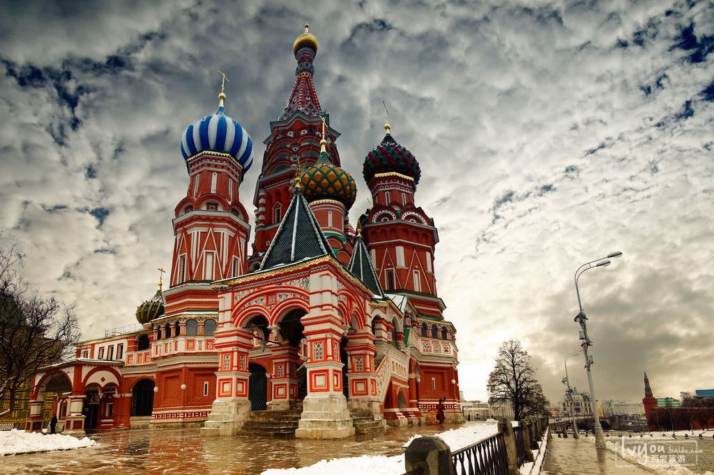

红场(俄语：Кра́сная пло́щадь)是特维尔区的一个公众广场。红场之内或边缘有几处著名建筑，包括列宁墓、圣巴西尔大教堂和克里姆林宫。红场东边是国家百货商场，其隔壁有国家历史博物馆。红场长695米、宽130米。红场所在的土地曾是有建筑的，但被1571年莫斯科大火烧毁。新空地（原来称为Pozhar, 或“烧光的地方”）逐渐成为莫斯科的主要市场。尔后，红场也用于各种公共典礼，偶尔也作为俄罗斯帝国沙皇加冕之地。红场自那时候逐渐振兴，并自其建立时由所有俄罗斯政府用于官方典礼。红场于1812年以后扩建，拿破仑的军队焚烧了莫斯科，当地人民重建家园的时候拓宽了红场。到20世纪20年代，红场又与附近的瓦西列夫斯基广场合并形成现在的规模。红场的名称不是从环绕它的砖头颜色衍生而来，也不是从红色和苏维埃之间的联系衍生而来(亦因此所以有不少人曾将此误作红墙)。产生红场之名是因为俄文字ldquo;Красная”（krasnaya）意指红的或美丽的。先是应用于华西里教堂，并随后转移至邻近广场。

到达方式：
搭乘地铁1号线至猎人商铺站（Охотный ряд），搭乘2号线至剧院站（Театральная），3号线至革命广场站（Площадь Революции），6、7号线至中国城站（Китай-город），下车步行即到；或搭乘25路公交车，1、2、8、12、16、25、33路无轨电车前往